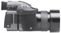

器材库 > 大中画幅可换镜头数码相机 > H4D-50

规格总览
产品类型
大中画幅可换镜头数码相机
发布日期
2009-09-25
厂家推荐价格
19,995.00 （欧元）
影像规格
影像传感器
CCD
影像传感器尺寸
36.8×49.1mm
总像素
5000万
静态图像格式
TIFF, RAW
静态图像质量
RAW：无损压缩 哈苏3FR
镜头和对焦
兼容镜头
哈苏HC/HCD系列镜头
曝光控制
测光模式
中央重点测光, 点测光, 中央点测光
测光范围
CW：1-21EV~SP：2-21EV
快门速度
32 - 1/800秒
取景器/显示屏
LCD类型
彩色TFT LCD
LCD尺寸
3.0英寸
LCD像素
23万
文件输入/输出
记录媒介
CF
数据接口
IEEE1394
电源
电池
可充电锂电池（7.2V/1850mAh）
机身规格
颜色
黑色
尺寸
机身+HC80/2.8镜头：153×131×213mm
重量
机身+HC80/2.8镜头+锂电池+CF卡：2290g
其它
工作温度
0-45℃
软件
Phocus for Mac and Windows
nyp1272012-01-19 19:424.38 分
操作性 4.50功能性 4.50美观性 5.00趣味性 3.50耐用性 4.00性价比 4.00解像力 5.00色彩还原 4.50
产品图 / 样片
哈苏 H4D-50
评测 / 相关文章
- 详细内容 （存档）
- ［资讯］哈苏H4D-50样片欣赏 （存档）
- ［行情］哈苏H4D-50中画幅数码相机到货 （存档）
- ［资讯］哈苏H4D在国内正式发布 （存档）
相关文章
- ［资讯］哈苏H4D-50样片欣赏 （存档）
- ［行情］哈苏H4D-50中画幅数码相机到货 （存档）
- ［资讯］哈苏H4D在国内正式发布 （存档）
- ［资讯］哈苏推出H4D中画幅相机系列 （存档）